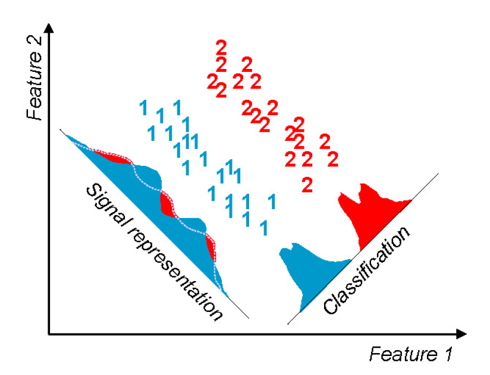
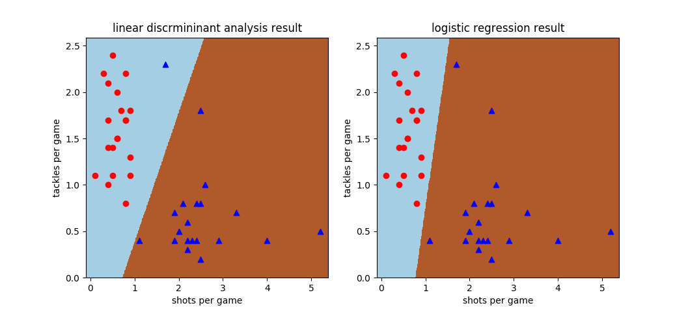
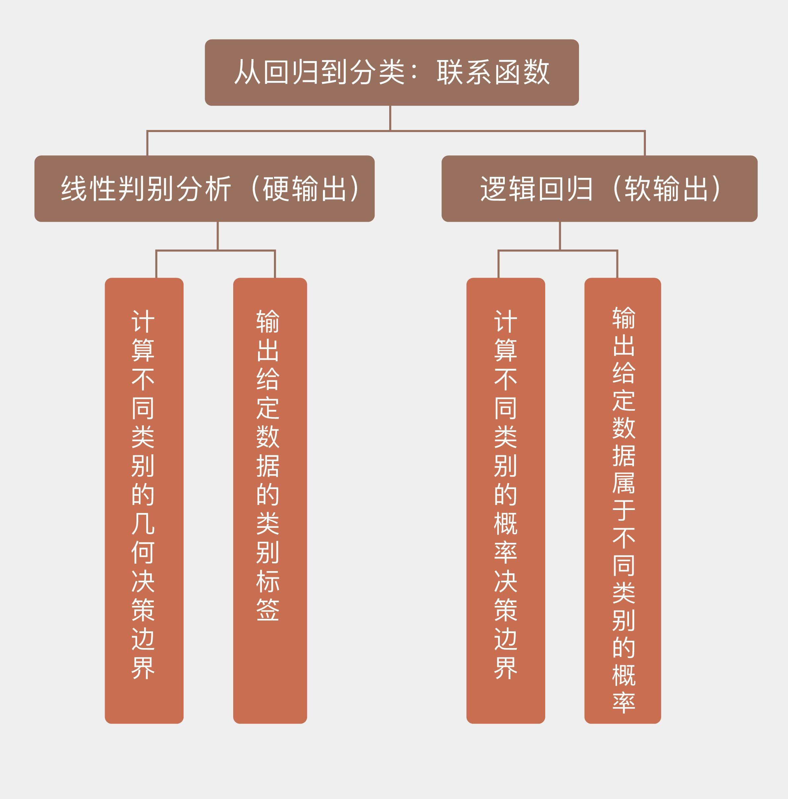

- 00 开篇词 打通修炼机器学习的任督二脉.md.html
- 01 频率视角下的机器学习.md.html
- 02 贝叶斯视角下的机器学习.md.html
- 03 学什么与怎么学.md.html
- 04 计算学习理论.md.html
- 05 模型的分类方式.md.html
- 06 模型的设计准则.md.html
- 07 模型的验证方法.md.html
- 08 模型的评估指标.md.html
- 09 实验设计.md.html
- 10 特征预处理.md.html
- 11 基础线性回归：一元与多元.md.html
- 12 正则化处理：收缩方法与边际化.md.html
- 13 线性降维：主成分的使用.md.html
- 14 非线性降维：流形学习.md.html
- 15 从回归到分类：联系函数与降维.md.html
- 16 建模非正态分布：广义线性模型.md.html
- 17 几何角度看分类：支持向量机.md.html
- 18 从全局到局部：核技巧.md.html
- 19 非参数化的局部模型：K近邻.md.html
- 20 基于距离的学习：聚类与度量学习.md.html
- 21 基函数扩展：属性的非线性化.md.html
- 22 自适应的基函数：神经网络.md.html
- 23 层次化的神经网络：深度学习.md.html
- 24 深度编解码：表示学习.md.html
- 25 基于特征的区域划分：树模型.md.html
- 26 集成化处理：Boosting与Bagging.md.html
- 27 万能模型：梯度提升与随机森林.md.html
- 28 最简单的概率图：朴素贝叶斯.md.html
- 29 有向图模型：贝叶斯网络.md.html
- 30 无向图模型：马尔可夫随机场.md.html
- 31 建模连续分布：高斯网络.md.html
- 32 从有限到无限：高斯过程.md.html
- 33 序列化建模：隐马尔可夫模型.md.html
- 34 连续序列化模型：线性动态系统.md.html
- 35 精确推断：变量消除及其拓展.md.html
- 36 确定近似推断：变分贝叶斯.md.html
- 37 随机近似推断：MCMC.md.html
- 38 完备数据下的参数学习：有向图与无向图.md.html
- 39 隐变量下的参数学习：EM方法与混合模型.md.html
- 40 结构学习：基于约束与基于评分.md.html
- 如何成为机器学习工程师？.md.html
- 总结课 机器学习的模型体系.md.html
- 总结课 贝叶斯学习的模型体系.md.html
- 结课 终有一天，你将为今天的付出骄傲.md.html
- 捐赠
15 从回归到分类：联系函数与降维
线性模型最初被用来解决回归问题（regression），可在实际应用中，更加普遍的是分类问题（classification）。要用线性模型解决分类问题的话，就需要将线性模型原始的连续输出转换成不同的类别。
在分类问题中，一种特殊的情况是类别非黑即白，只有两种，这样的问题就是二分类问题，它可以看成是多分类问题的一个特例，也是今天讨论的对象。
将回归结果转化为分类结果，其实就是将属性的线性组合转化成分类的标准，具体的操作方式有两种：一种是直接用阈值区分回归结果，根据回归值与阈值的关系直接输出样本类别的标签；另一种是用似然度区分回归结果，根据回归值和似然性的关系输出样本属于某个类别的概率。
这两类输出可以分别被视为硬输出和软输出，它们代表了解决分类问题不同的思路。
硬输出是对数据的分类边界进行建模。实现硬输出的函数，也就是将输入数据映射为输出类别的函数叫作判别函数（discriminant）。判别函数可以将数据空间划分成若干个决策区域，每个区域对应一个输出的类别。不同判别区域之间的分界叫作决策边界（decision boundary），对应着判别函数取得某个常数时所对应的图形。用线性模型解决分类问题，就意味着得到的决策边界具有线性的形状。
最简单的判别函数就是未经任何变换的线性回归模型\( y({\\bf x}) = {\\bf w} ^ T {\\bf x} + b\)，它将回归值大于某个阈值（可以通过调整截距\(b\)设置为0）的样本判定为正例，小于阈值的样本则判定为负例。
在处理多分类任务时，判别函数对每个类别都计算出一组系数\({\\bf w}_k\)和\(b_k\)，并选择使\(y_k({\\bf x})\)最大的\(k\)作为输出类别。如果分类的边界较为复杂，还可以通过基函数的扩展或者核技巧来突破线性的限制，相关的内容会在后面的文章中涉及。
今天我们先来看看基于软输出的分类方法。软输出利用的是似然度，需要建立关于数据的概率密度的模型，常见的具体做法是对线性回归的结果施加某种变换，其数学表达式可以写成
\[ y({\\bf x}) = g ^ {-1} ({\\bf w} ^ T {\\bf x} + b)\]
这里的\(g(\\cdot)\)被称为联系函数（link function），其反函数\(f(\\cdot) = g ^ {-1}\)则被称为激活函数（activation function）。正是联系函数架起了线性模型从回归到分类的桥梁。
最典型的软输出分类模型就是逻辑回归。在“人工智能基础课”中我曾介绍过，逻辑回归（logistic regression）是基于概率的分类算法，估计的是样本归属于某个类别的后验概率，那么根据贝叶斯定理，二分类问题中的后验概率就可以写成
\[ p(C_1 | {\\bf x}) = \\dfrac{p({\\bf x} | C_1) p(C_1)}{p({\\bf x} | C_1) p(C_1) + p({\\bf x} | C_2) p(C_2)}\]
对这个表达式做个简单的变量代换，就可以得到
\[ p(C_1 | {\\bf x}) = \\dfrac{1}{1 + \\exp(-a)} = \\sigma(a) \]
这里的\(\\sigma (\\cdot)\)表示对数几率函数（logistic function），也就是逻辑回归的联系函数，这个非线性的联系函数可以将任意输入映射到[0, 1]之间。对数几率函数的自变量\(a\)可以改写成
\[ a = \\ln \\dfrac{p({\\bf x} | C_1) p(C_1)}{p({\\bf x} | C_2) p(C_2)} = \\ln \\dfrac{p({\\bf x} | C_1)}{p({\\bf x} | C_2)} + \\ln \\dfrac{p(C_1)}{p(C_2)} = {\\bf w}^T {\\bf x} + b \]
逻辑回归并不能直接给出参数\(\\bf w\)的解析解，因此需要结合最优化的方法使用。确定参数最常用的方式是使用最大似然估计（maximum likelihood estimation），找到如训练数据匹配度最高的一组参数。
在二分类问题中，若假设当\(\\bf x\)属于类\(C_1\)时，输出的分类结果\(r\)为1，属于类\(C_2\)时，输出的分类结果\(r\)为0，那么每个单独的分类结果都满足参数为\(\\sigma ({\\bf x})\)的两点分布，所有结果构成的向量\(\\bf r\)就会满足二项分布，这时的似然概率就可以写成分类结果的连乘
\[ p({\\bf w}, b | {\\bf x}) = \\prod\\limits_i \\sigma ({\\bf x_i}) ^ {r_i} \[1 - \\sigma ({\\bf x_i})\] ^ {(1 - r_i)} \]
对似然概率求对数并求解最大值，就可以得到最优的参数了。
和逻辑回归相似的另一种分类模型是线性判别分析，它不仅要估计数据的概率密度，还应用了降维的思想。在前面的两篇文章中，我和你分享了对数据进行线性降维和非线性降维的方法。
其实降维不光是数据预处理的一种手段，它还可以用来执行分类任务——本质上讲，分类问题就是将高维的数据投影到一维的类别标签上。
维度的下降会导致信息的损失，从而使数据在标签维度上产生重叠。属于相同类别的数据重叠在一起并不是严重的问题，但类别不同的数据的重叠就会增加分类问题的错误率，因此好的分类算法既要让相同类别的数据足够接近，又要让不同类别的数据足够远离。基于这一原则进行分类的方法就是线性判别分析。
用于二分类的线性判别分析由著名的统计学家罗纳德·费舍尔于1936年提出，按人类的年龄计算已是耄耋之年。归根结底，线性判别分析也是从概率出发，假设不同类别的数据来源于均值不同而方差相同的正态分布，通过判定数据归属于不同正态的可能性来确定类别。
但在设计线性判别分析时，费舍尔利用了一种不同的思路。在计算二分类问题的决策边界时，线性判别分析首先要计算两个类别中数据的均值，以此作为特征来区分不同的类别，让不同类别的数据足够远离就是让两个均值在决策边界上的投影之间的距离足够大。
但仅是均值远离还不够。数据在不同维度上的分布不同会导致有些方向的方差较大，而有些方向的方差较小。如果仅仅考虑均值而忽略了方差，就可能导致判决边界落在波动较大的方向上，由此产生的长尾效应容易使不同类别的数据互相重叠，从而影响分类的精度。因此在投影时，还要让相同类别的数据尽可能集中分布，以避免混叠的出现。
假定训练数据分属两个类别\(C_1\)和\(C_2\)，每个类别中数据的均值用向量\({\\bf m}_1\)和\({\\bf m}_2\)表示，那么这两个均值在超平面\({\\bf y} = {\\bf w} ^ T {\\bf x} + b\)上的投影就等于
\[m_k = {\\bf w} ^ T {\\bf m}_k (k = 1, 2)\]
降维后两个类各自的方差可以表示为
\[s_k = \\sum_{n \\in C_k} (y_n - m_k) ^ 2 (k = 1, 2)\]
要同时保证类间距最大和类内方差最小，可以通过最大化下面的目标函数来实现
\[ J({\\bf w}) = \\dfrac{(m_2 - m_1) ^ 2}{s_1^2 + s_2^2} \]
其中待求解的参数\(\\bf w\)需要满足归一化条件\(|| {\\bf w} ||_2^2 = 1\)，而这并不会对\(\\bf w\)的方向造成影响。将线性回归模型代入\(J({\\bf w})\)的表达式，可以将它改写成
\[ J({\\bf w}) = \\dfrac{{\\bf w} ^ T {\\bf S}_B {\\bf w}}{{\\bf w} ^ T {\\bf S}_W {\\bf w}} \]
这里有这么几个概念。
类间协方差矩阵（between-class covariance matrix）
\[{\\bf S}_B = ({\\bf m}_2 - {\\bf m}_1)({\\bf m}_2 - {\\bf m}_1)^T\]
类内协方差矩阵（within-class covariance matrix）
\[{\\bf S}_W = \\sum_{n \\in C_1}({\\bf x}_n - {\\bf m}_1)({\\bf x}_n - {\\bf m}_1)^T + \\sum_{n \\in C_2}({\\bf x}_n - {\\bf m}_2)({\\bf x}_n - {\\bf m}_2)^T\]
两者之商的学名叫作广义瑞利商（generalized Rayleigh quotient）。可以求出，使广义瑞利商最大化的解析解为\({\\bf w} = {\\bf S}^{-1}_{\\bf w} ({\\bf m}_2 - {\\bf m}_1)\)。
单从形式上看，线性判别分析和主成分分析同属于降维技术，有不少相似的地方，但两者却有本质上的区别。主成分分析的目的是保留不确定性，是通过选择方差最大的主成分来实现信息损失最小的数据低维度重构，整个过程是无监督的。
相比之下， 线性判别分析在降维时要利用数据的类别，因而属于监督学习的范畴，学习的目的则是消除不确定性。消除的不确定性就是类间方差，这部分信息被提取到了类别标签中。分类之后数据的方差越小，意味着降维后剩余的类内不确定性就越小。
在实际应用中，通常可以先使用主成分分析进行特征提取，再利用线性判别分析做训练。这就相当于先把数据的信息集中在某些特征上，再利用不同的类别把这些信息提取出来。

主成分分析（左）与线性判别分析（右）的对比
图片来自https://zybuluo.com/anboqing/note/117518
将线性模型扩展到分类问题中时，线性判别分析和逻辑回归作为两种具有代表性的模型，都是基于概率生成线性的分类边界，因此有必要做一比较。
线性判别分析就像个傲娇的老师，只愿意指导天赋异禀的学生，这体现在它对数据的要求上：第一，每个类别的数据必须服从潜在的多元正态分布；第二，每个类别的数据必须具有相同或者相近的协方差矩阵；第三，数据的属性之间不能存在较强的共线性，计算出的协方差矩阵应为满秩矩阵；第四，数据中尽可能不存在异常点。
虽然在实际问题中，一定程度上放宽这些条件并不会对线性判别分析的性能产生太大的影响，但这些条件还是严重地限制了方法的应用，使找到一个能解决的问题比解决这个问题更加困难。
相比之下，逻辑回归就没有那么多讲究了，这个老师不管学生好坏都能因材施教。它无需对数据分布做出任何先验假设（两点分布是二分类问题必然的结果），对数据的协方差矩阵和共线性也没有特殊的要求。即使当数据集中存在一些异常点，逻辑回归也能完成精确地分类。整体来说，线性判别分析只能在所有条件都满足时发挥出最佳的性能，在任何其他的场景下都要略逊逻辑回归一筹。
虽然实现的方式有所不同，但本篇所介绍的两种解决分类问题的方法在思想上是一致的，那就是根据数据的概率密度来实现分类。这两种基于似然度（likelihood-based）的模型在执行分类任务时不是以每个输入样本为单位，而是以每个输出类别为单位，将每个类别的数据看作不同的整体，并寻找它们之间的分野。这样看来，数据和人一样，也要面临站队的问题啊！
在Scikit-learn中，线性判别分析在模块discriminant_analysis中实现，逻辑回归则在模块linear_model中实现。由于逻辑回归需要使用有标签的数据，因而原来的回归数据就不能使用了。
这次使用的数据依然来自于WhoScored的英超技术统计：我选取了17/18赛季平均评分最高的20名中卫和20名中锋，他们的首发次数均在15次以上。数据的属性包括每个人的场均射门数和场均铲球数两个维度，位置则作为分类标签出现。熟悉足球的朋友肯定明白，中卫的铲球数较多，而中锋的射门数较多，因此这两个指标可以用来作为判断位置的根据。

线性判别分析和逻辑回归在中卫-中锋数据集上的决策边界，红色圆点代表中卫，蓝色三角代表中锋
用上面的数据集训练使用不同的线性分类模型，得到的效果也不相同。这个数据集本身是线性可分的，也就是存在将两个类别完全区分开来的线性边界，这条边界也被逻辑回归正确地计算出来。可遗憾的是，线性判别分析并没有找到准确的边界，而是将一个热爱防守的前锋（斯旺西城18号乔丹·阿尤，每场的铲球多过射门，这不禁让人想起著名的防守型前锋德克·库伊特）误认成后卫。
直观地从数据分布的图示看，这个被线性判别分析误分类的蓝点和其他蓝点相距较远，反倒是和红点更加接近，怎么看怎么像是个异常点。在计算数据的统计特性时，这个离群索居的样本远离了归属类的均值，也就难怪会被同伴所抛弃。这也印证了前面的说法：线性判别分析需要较强的假设来支持。
今天我和你分享了使用线性模型解决分类问题的方法，其要点如下：
在解决分类问题时，线性模型的回归值可以通过联系函数转化为分类结果；
线性判别分析假定数据来自均值不同但方差相同的正态分布，通过最大化类间方差与类内方差的比值计算线性边界；
逻辑回归计算的是不同类别的概率决策边界，输出的是给定数据属于不同类别的后验概率；
基于线性模型的分类方法计算出的决策边界是输入属性的线性函数。
当线性边界不足以完成分类任务时，线性判别分析可以推广为二次判别分析（Quadratic Discriminant Analysis），那么两者之间存在这哪些区别和联系呢？
你可以查阅资料加以了解，并在这里分享你的理解。

© 2019 - 2023 Liangliang Lee. Powered by gin and hexo-theme-book.